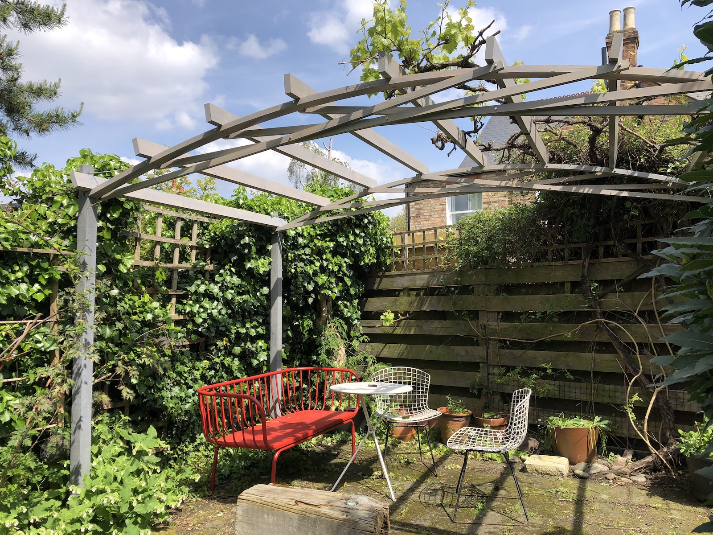
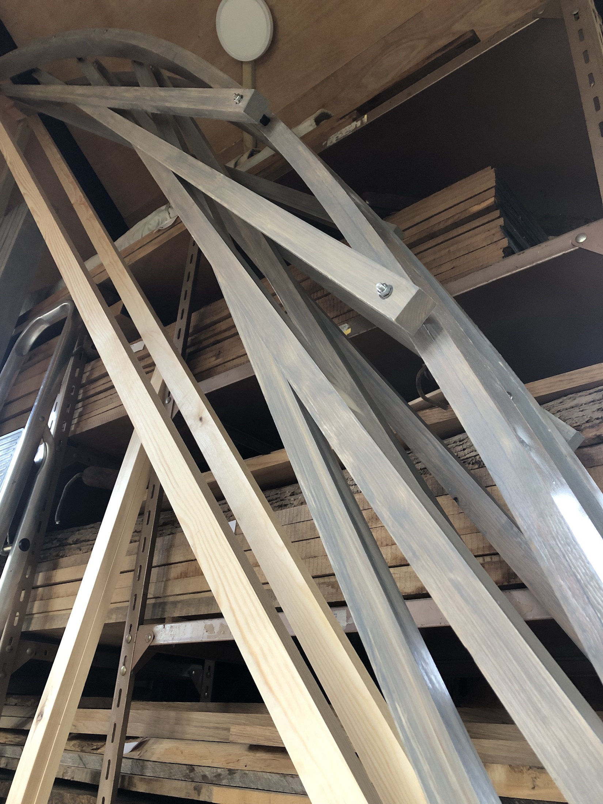

Rebuilding the vine arbour

The arbour which had been standing in our garden for some 15 years finally gave up under the weight of our ancient vine. It had been made with deliberate lightness and had lasted well. But the time had come. The new structure had to be equally lightweight and economic and support the vine in the same way covering a roughly 3 metre square terrace. Previously the bowed ‘trusses’ front and back had been tied with a horizontal steel rod. In the new design the ties are integral with the timber structure and progressive, made up of several linked timbers tying the bowed top member together. These positioned so that each just touches the next as they cross – difficult to design and satisfying to build.
